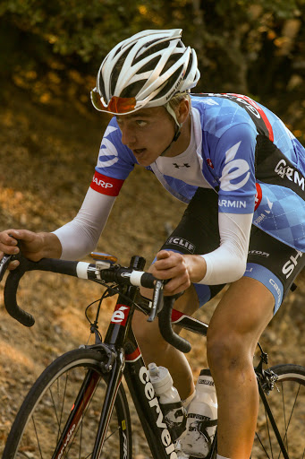

Low-Key Hillclimbs Aggregate Results:
Bohlman-Norton-Kittridge-Quickert-On Orbit-Bohlman
generated Fri Nov 4 10:34:14 PDT 2016
|
|  |
| 2013 week 3: Adrien Costa showing his broken collarbone isn't holding him back as he shatters the Low-Key course record and Strava KOM (Tom Everman) |
Results are listed here from the Low-Key archives, sorted by time for each climb. Some years start and/or finish time differ slightly, such as
with Kings Mt Road where after 1995 the start moved from Entrance Way to Greer.
Results are ranked by time first, score second.
Score is calculated using a simple percent-of-median-speed
formula, with time adjustments for division. These scores will generally differ from those calculated in the results for that particular year, since
the scoring scheme has evolved. Tandems are split between 1998, when they were counted as single participants, and other years, when the individual
riders have been counted separately
Results for Men
| rank | time | score | rider | cat | team | year | week | code |
|---|
| 1 | 24:57 | 132.442 | Adrien Costa | | Garmin Juniors | 2013 | 3 | |
| 2 | 26:08 | 131.218 | Chris Phipps | 1 | Western Wheelers | 2011 | 4 | |
| 3 | 26:14 | 125.963 | Kenneth Spencer | 35+ | Western Wheelers | 2013 | 3 | |
| 4 | 26:51 | 127.716 | Tracy Colwell | 40+ | Team Colwell | 2011 | 4 | |
| 5 | 26:51 | 123.070 | Stefano Profumo | 35+ | Bike Trip/Symantec | 2013 | 3 | |
| 5 | 26:51 | 123.070 | David Collet | 40+ | Pen Velo/Pomodoro | 2013 | 3 | |
| 7 | 26:54 | 130.173 | Scott Frake | 45+ | Alto Velo | 2009 | 6 | |
| 8 | 27:11 | 126.150 | Harlan H. Chapman | 50+ | Morgan Stanley Smith Barney Specialized | 2011 | 4 | |
| 9 | 27:30 | 124.697 | Daniel Connelly | 3 | Low-Key | 2011 | 4 | |
| 10 | 27:37 | 124.170 | Jacob Berkman | 30+ | Dolce Vita Cycling | 2011 | 4 | |
| 11 | 27:42 | 119.293 | Tracy Colwell | 45+ | Team Colwell | 2013 | 3 | |
| 12 | 27:50 | 118.722 | Joe Sullivan | 35+ | San Jose Bike Club | 2013 | 3 | |
| 13 | 27:55 | 122.836 | Steve Peck | 45+ | Silicon Valley Triathlon | 2011 | 4 | |
| 14 | 28:05 | 124.688 | Carl Nielson | 45+ | Sr's & Mr's of No Mercy | 2009 | 6 | |
| 15 | 28:20 | 116.627 | Dan Perry | 40+ | Bike Trip/Symantec | 2013 | 3 | |
| 16 | 28:25 | 116.285 | Rich McLovin Brown | 35+ | The Brown Zone | 2013 | 3 | |
| 17 | 28:36 | 122.436 | Tim Clark | 40+ | Metrigear | 2009 | 6 | |
| 18 | 28:40 | 119.622 | Bill Brier | 45+ | Team Fremont FFBC p/b Chipotle | 2011 | 4 | |
| 19 | 28:42 | 122.009 | Tom Gardin | 45+ | | 2009 | 6 | |
| 20 | 28:42 | 115.137 | Ciaran Byrne | 40+ | Sr's & Mr's of No Mercy | 2013 | 3 | |
| 21 | 28:56 | 118.520 | Tim Clark | 40+ | Low-Key | 2011 | 4 | |
| 22 | 28:59 | 118.315 | Rich Hill | 45+ | LGBRC | 2011 | 4 | |
| 23 | 29:06 | 117.841 | ben weir | 30+ | | 2011 | 4 | |
| 24 | 29:15 | 119.715 | Laurent Pfertzel | 45+ | | 2009 | 6 | |
| 25 | 29:16 | 119.647 | Rune Dahl | 45+ | Western Wheelers | 2009 | 6 | |
| 26 | 29:16 | 117.170 | Joe Fant | 50+ | San Jose Bike Club | 2011 | 4 | |
| 27 | 29:20 | 116.903 | McLovin | 1 | The Brown Zone | 2011 | 4 | |
| 28 | 29:20 | 112.651 | Robert Easley | 45+ | Sr's & Mr's of No Mercy | 2013 | 3 | |
| 29 | 29:23 | 116.704 | Rune Dahl | 45+ | Western Wheelers | 2011 | 4 | |
| 30 | 29:25 | 119.037 | Rich Hill | 40+ | LGBRC | 2009 | 6 | |
| 31 | 29:32 | 116.112 | Christian Paquet | | Doogie | 2011 | 4 | |
| 32 | 29:33 | 111.825 | Andy Crews | 40+ | Diablo | 2013 | 3 | |
| 32 | 29:33 | 111.825 | Tom Stanis | 35+ | Google | 2013 | 3 | |
| 34 | 29:36 | 118.300 | Bill Davis | 25+ | Google | 2009 | 6 | |
| 35 | 29:37 | 118.233 | Jacob Berkman | | | 2009 | 6 | |
| 36 | 29:41 | 115.525 | Dave Blizard | 40+ | Pen Velo/Pomodoro | 2011 | 4 | |
| 37 | 29:43 | 115.395 | Tommy "Milktoast" Rice | 50+ | Coretechs Cycling Team | 2011 | 4 | |
| 38 | 29:48 | 115.073 | Bennett Chi Lee | 45+/Ponytail | Speedy Bees | 2011 | 4 | |
| 39 | 29:48 | 110.887 | Chris Furgiuele | 40+ | Studio Velo Racing | 2013 | 3 | |
| 39 | 29:48 | 110.887 | Daryl Spano | 45+ | San Jose Bike Club | 2013 | 3 | M |
| 41 | 29:50 | 114.944 | Dai Sieh | Robusto | The Brown Zone | 2011 | 4 | |
| 41 | 29:50 | 114.944 | Mark Edwards | 50+ | Bike Trip/Symantec | 2011 | 4 | |
| 43 | 29:52 | 110.639 | Nils Tikkanen | Honey Badger | Bike Trip/Symantec | 2013 | 3 | |
| 44 | 29:53 | 110.578 | Joe Fant | 50+ | The Brown Zone | 2013 | 3 | |
| 45 | 30:00 | 114.306 | Dan Palmer | 45 T | Bike Trip/Symantec | 2011 | 4 | |
| 46 | 30:03 | 114.115 | Brooks Sizemore | 4 | Pen Velo/Pomodoro | 2011 | 4 | |
| 47 | 30:07 | 109.721 | Alexander Komlik | 45+ | San Jose Bike Club | 2013 | 3 | |
| 48 | 30:08 | 116.206 | Bruce Gardner | 35+ | Sr's & Mr's of No Mercy | 2009 | 6 | |
| 49 | 30:09 | 116.142 | Brian Edwards | 30+ | Rocky Mounts/Pearl Izumi | 2009 | 6 | |
| 50 | 30:15 | 113.361 | Joe Sullivan | 35+ | San Jose Bike Club | 2011 | 4 | |
| 51 | 30:19 | 115.503 | Andy Brisnehan | 50+ | Western Wheelers | 2009 | 6 | |
| 52 | 30:29 | 112.493 | Brian Edwards | | Dirkless | 2011 | 4 | |
| 53 | 30:30 | 112.432 | Steven Enns | | Dirkless | 2011 | 4 | |
| 54 | 30:33 | 112.248 | Kevin Keenan | 55+ | Sr's & Mr's of No Mercy | 2011 | 4 | |
| 55 | 30:39 | 111.881 | J.D. Daniels | 35+ | Eden Bicycles | 2011 | 4 | |
| 56 | 30:50 | 113.568 | Ron Brunner | Commuter | Low-Key | 2009 | 6 | |
| 57 | 30:50 | 111.216 | Dan Perry | 40+ | Bike Trip/Symantec | 2011 | 4 | |
| 58 | 30:51 | 113.506 | John Walker | 45+ | Google | 2009 | 6 | |
| 59 | 30:52 | 111.096 | Dave Morton | 35+ | | 2011 | 4 | |
| 60 | 30:54 | 110.976 | Ken Sato | 45+ | Bike Trip/Symantec | 2011 | 4 | |
| 61 | 30:54 | 106.939 | Klaus Fleischmann | 45+ | | 2013 | 3 | |
| 62 | 30:55 | 106.882 | Joel Wilson | 30+ | Menlo Bike Club | 2013 | 3 | |
| 63 | 31:01 | 110.559 | Cieran Byrne | | Western Wheelers | 2011 | 4 | |
| 64 | 31:06 | 110.263 | Paul McKenzie | 55+ | Marc Pro - Strava | 2011 | 4 | |
| 65 | 31:12 | 105.911 | Brandon Smith | 25+ | Team CVC | 2013 | 3 | |
| 66 | 31:15 | 112.053 | Christian Paquet | 50+ | Doogie | 2009 | 6 | |
| 66 | 31:15 | 112.053 | Mike Schuster | 40+ | Google | 2009 | 6 | |
| 68 | 31:21 | 105.404 | Eddie Santos | 25+ | Bike Trip/Symantec | 2013 | 3 | |
| 69 | 31:26 | 105.125 | Habañero Brown | Wheel Horse | The Brown Zone | 2013 | 3 | |
| 70 | 31:31 | 108.805 | Mike Schuster | 40+ | Google | 2011 | 4 | |
| 71 | 31:33 | 110.988 | Nathan Cauffman | 30+ | UID | 2009 | 6 | |
| 72 | 31:34 | 108.633 | Andy Crews | 40+ | Diablo | 2011 | 4 | |
| 73 | 31:37 | 108.461 | Tick Houk | 50+ | The Brown Zone | 2011 | 4 | |
| 74 | 31:37 | 104.515 | Dino Brown | 50+ | The Brown Zone | 2013 | 3 | |
| 75 | 31:42 | 104.241 | Lindsey Furtado | 30+ | Team CVC | 2013 | 3 | |
| 76 | 31:43 | 108.119 | Klaus Fleischmann | 40= | | 2011 | 4 | |
| 77 | 31:50 | 103.804 | Kitchen Patrol | | The Brown Zone | 2013 | 3 | |
| 78 | 31:51 | 109.942 | Jeff Farnsworth | 50+ | San Jose Bike Club | 2009 | 6 | |
| 79 | 31:51 | 107.666 | TOM FERREIRA | 45+ | Eden Bicycles | 2011 | 4 | |
| 80 | 31:52 | 107.610 | Tim Sawyer | 50+ | Bike Trip/Symantec | 2011 | 4 | |
| 81 | 31:55 | 107.441 | Justin Lucke | Plant Based | LGBRC | 2011 | 4 | |
| 82 | 31:56 | 103.479 | Doug Reynolds | 60+ | NightRiders | 2013 | 3 | |
| 83 | 31:59 | 107.217 | Denin Sahovic | 35+ | The Brown Zone | 2011 | 4 | |
| 84 | 32:00 | 107.161 | Peter Mehlitz | Too-Old-To-Count | | 2011 | 4 | |
| 85 | 32:01 | 103.210 | Mark King | 45+ | Equipe Flamme Rouge | 2013 | 3 | |
| 86 | 32:03 | 109.256 | Evan Paull | 25+ | Alto Velo | 2009 | 6 | |
| 86 | 32:03 | 109.256 | Scott Martin | 50+ | Bike Trip/Symantec | 2009 | 6 | |
| 88 | 32:04 | 109.200 | Michael Simos | 35+ | LGBRC | 2009 | 6 | |
| 89 | 32:05 | 109.143 | Sean Broeder | 45+ | Silicon Valley Triathlon | 2009 | 6 | |
| 89 | 32:05 | 109.143 | Martin Hyland | 50+ | Western Wheelers | 2009 | 6 | |
| 91 | 32:06 | 106.828 | Chris Furgiuele | 35+ | Dolce Vita Cycling | 2011 | 4 | |
| 92 | 32:06 | 102.942 | Jeff Farnsworth | 55+ | San Jose Bike Club | 2013 | 3 | |
| 93 | 32:15 | 106.331 | KP | None Of Your Bee's Wax | The Brown Zone | 2011 | 4 | |
| 94 | 32:18 | 106.166 | Nils Tikkanen | Honey Badger | Bike Trip/Symantec | 2011 | 4 | |
| 95 | 32:22 | 102.093 | Bill Harkola | 55+ | Pen Velo/Pomodoro | 2013 | 3 | |
| 96 | 32:23 | 105.893 | Doug Reynolds | 60+ | Alberto's Steak House | 2011 | 4 | |
| 97 | 32:24 | 101.988 | Matt Wocasek | 45+ | Bike Trip/Symantec | 2013 | 3 | |
| 98 | 32:26 | 101.884 | Russ McCrary | 55+ | Sr's & Mr's of No Mercy | 2013 | 3 | |
| 99 | 32:27 | 105.675 | Martin Hyland | 55+ | Western Wheelers | 2011 | 4 | |
| 100 | 32:45 | 104.707 | Adam Brinkman | 30+ | Dirkless | 2011 | 4 | |
| 100 | 32:45 | 104.707 | Naoto Sato | 45+ | | 2011 | 4 | |
| 102 | 32:53 | 104.283 | Bryn Dole | 40+ | Blekko | 2011 | 4 | |
| 103 | 32:54 | 104.230 | Christopher O'Keefe | 45+ | Atomic Bonk | 2011 | 4 | |
| 104 | 32:56 | 106.326 | Nick Pelly | | Google | 2009 | 6 | |
| 105 | 32:56 | 104.124 | Rob Cosaro | 50+ | Doogie | 2011 | 4 | |
| 106 | 32:57 | 104.072 | John Richardson | 55+ | Pen Velo/Pomodoro | 2011 | 4 | |
| 107 | 32:58 | 106.218 | Peter Mehlitz | 45+ | | 2009 | 6 | |
| 108 | 32:58 | 100.235 | Michael Kowalchuk | 25+ | Google | 2013 | 3 | |
| 109 | 33:04 | 105.897 | Kevin Comerford | Commuter | | 2009 | 6 | |
| 110 | 33:04 | 99.932 | Terrance Kloeckl | 50+ | Last Chosen | 2013 | 3 | |
| 111 | 33:06 | 105.791 | Mike Salameh | 55+ | | 2009 | 6 | |
| 112 | 33:13 | 99.481 | Michael Busha | 30+ | | 2013 | 3 | |
| 113 | 33:21 | 102.824 | Bill Preucel | 45+ | Sr's & Mr's of No Mercy | 2011 | 4 | |
| 114 | 33:23 | 104.893 | David Quincy | | Sponge Bob | 2009 | 6 | |
| 115 | 33:25 | 104.788 | Bob Williams | 50+ | Over The Hill | 2009 | 6 | |
| 116 | 33:31 | 102.312 | Russ McCrary | 50+ | Sr's & Mr's of No Mercy | 2011 | 4 | |
| 117 | 33:45 | 103.753 | Stewart Thompson | 5 | Pen Velo/Pomodoro | 2009 | 6 | |
| 118 | 33:47 | 101.505 | Jeff Farnsworth | 50+ | San Jose Bike Club | 2011 | 4 | |
| 119 | 33:48 | 101.455 | bogdan marian | 30+ | | 2011 | 4 | |
| 120 | 33:53 | 103.345 | Ryan Gibson | | Google | 2009 | 6 | |
| 121 | 33:57 | 101.006 | jimfox | 65+ | hammer nutrition | 2011 | 4 | |
| 122 | 33:58 | 103.091 | Chuck Spiteri | 50+ | Pen Velo/Pomodoro | 2009 | 6 | |
| 123 | 34:09 | 102.538 | John Richardson | 55+ | Over The Hill | 2009 | 6 | |
| 124 | 34:10 | 100.366 | Stephen Berg | 30+ | Western Wheelers | 2011 | 4 | |
| 125 | 34:25 | 99.637 | Alan Weatherall | | San Jose Bike Club | 2011 | 4 | |
| 126 | 34:28 | 95.873 | Andrew Fitzhugh | 50+ | | 2013 | 3 | |
| 127 | 34:30 | 95.780 | Mark Debbage | 45+ | | 2013 | 3 | |
| 128 | 34:31 | 95.734 | Peter Ingram | 55+ | Steely Man | 2013 | 3 | |
| 129 | 34:32 | 101.400 | Gino Cetani | 35+ | Western Wheelers | 2009 | 6 | |
| 130 | 34:39 | 101.058 | Andre Swart | Junior | Ryro | 2009 | 6 | |
| 131 | 34:40 | 95.320 | Andy Sutterfield | 20+ | | 2013 | 3 | |
| 132 | 34:41 | 95.274 | sani obhodas | 25+ | Bar Utd | 2013 | 3 | |
| 133 | 34:43 | 100.864 | David Vrane | 45+ | SLACer | 2009 | 6 | |
| 134 | 34:48 | 98.539 | Carlos Reyes | 20+ | | 2011 | 4 | |
| 135 | 34:49 | 100.574 | Dave Rossow | 35+ | Alto Velo | 2009 | 6 | |
| 136 | 34:49 | 98.492 | Gino Cetani | 40+ | Western Wheelers | 2011 | 4 | |
| 137 | 35:00 | 97.976 | Shance Ordell | 35+ 123 | Western Wheelers | 2011 | 4 | |
| 138 | 35:01 | 97.930 | David Vrane | 45+ | Sr's & Mr's of No Mercy | 2011 | 4 | |
| 139 | 35:02 | 94.322 | William Yee | 35+ | Team CVC | 2013 | 3 | |
| 140 | 35:03 | 97.836 | Jens Weber | 30+ | Doogie | 2011 | 4 | |
| 141 | 35:08 | 94.054 | Tim Irvine | 40+ | LGBRC | 2013 | 3 | |
| 142 | 35:09 | 94.009 | Matthew Lewsadder | 35+ | LGBRC | 2013 | 3 | |
| 143 | 35:10 | 93.965 | Billy Bob Brown | 50+ | The Brown Zone | 2013 | 3 | |
| 144 | 35:13 | 99.432 | Bill Preucel | 45+ | Sr's & Mr's of No Mercy | 2009 | 6 | |
| 145 | 35:18 | 99.197 | Phil Alne | 40+ | LGBRC | 2009 | 6 | |
| 146 | 35:23 | 96.915 | Matt Wocasek | 45+ | Bike Trip/Symantec | 2011 | 4 | |
| 147 | 35:27 | 93.214 | Scott Byer | 45+ | Google | 2013 | 3 | |
| 148 | 35:30 | 93.082 | Nic Brummell | 50+ | Atlas | 2013 | 3 | |
| 149 | 35:31 | 98.592 | John Carrino | 25+ | Palantir | 2009 | 6 | |
| 150 | 35:31 | 96.551 | Frederick Stamm | 55+ | Pen Velo/Pomodoro | 2011 | 4 | |
| 151 | 35:32 | 98.546 | Jeff Shute | 30+ | Google | 2009 | 6 | |
| 152 | 35:45 | 95.921 | Will von Kaenel | 50+ | LGBRC | 2011 | 4 | |
| 153 | 35:45 | 92.431 | Bart Niechwiej | 35+ | Google | 2013 | 3 | |
| 154 | 35:55 | 95.476 | Curtis Ruegg | 45+ | Pen Velo/Pomodoro | 2011 | 4 | |
| 155 | 35:56 | 91.960 | StephensWilcox | 45+ | | 2013 | 3 | |
| 156 | 36:02 | 95.167 | Franz Kelsch | 60+ | Alberto's Steak House | 2011 | 4 | |
| 157 | 36:03 | 91.662 | Ramon Periquet | 50+ | Team CVC | 2013 | 3 | |
| 158 | 36:07 | 96.954 | Dirk Veenema | Elite | Stanford Cycling | 2009 | 6 | |
| 159 | 36:07 | 91.493 | bogdan marian | 30+ | | 2013 | 3 | D |
| 160 | 36:09 | 94.859 | Fred Egley | 45+ | Dos Egleys | 2011 | 4 | |
| 161 | 36:14 | 96.642 | François Cosquer | 40+ | E.C.V.V.T. | 2009 | 6 | |
| 162 | 36:20 | 96.376 | Larry Klein | 45+ | Jerry | 2009 | 6 | |
| 163 | 36:22 | 96.288 | Vince Cummings | | | 2009 | 6 | |
| 164 | 36:27 | 96.068 | Gary Griffin | 55+ | Bike Trip/Symantec | 2009 | 6 | |
| 165 | 36:27 | 90.656 | Mihai R. | 30+ | Google | 2013 | 3 | |
| 166 | 36:32 | 93.864 | Tim Irvine | 40+ | LGBRC | 2011 | 4 | |
| 167 | 36:33 | 93.821 | Jim Williams | 60+ | Alberto's Steak House | 2011 | 4 | |
| 168 | 36:41 | 90.080 | Larry Klein | 50+ | Grumpy Old Men (GOM) | 2013 | 3 | |
| 169 | 36:47 | 95.197 | William Von Kaenel | 50+ | LGBRC | 2009 | 6 | |
| 170 | 36:51 | 95.025 | Matt Beadon | 30+ | | 2009 | 6 | |
| 171 | 36:53 | 92.973 | Philip Clark | 25+ | Google | 2011 | 4 | |
| 172 | 36:56 | 92.847 | Jon Degenhardt | 50+ | Alameda Velo | 2011 | 4 | |
| 173 | 36:57 | 92.806 | Bruce Gardner | 40+ | Sr's & Mr's of No Mercy | 2011 | 4 | |
| 174 | 37:02 | 92.597 | Brandon Iles | 25+ | Google | 2011 | 4 | |
| 175 | 37:02 | 89.228 | Sam Beal | 60+ | Volagi | 2013 | 3 | |
| 176 | 37:09 | 92.306 | Fred Frederson | Cat Slow | Coretechs Cycling Team | 2011 | 4 | |
| 177 | 37:17 | 88.630 | Jeff Shute | 35+ | Google | 2013 | 3 | |
| 178 | 37:21 | 93.753 | Paul Melville | 55+ | Doogie | 2009 | 6 | |
| 179 | 37:24 | 93.627 | James Dudley | | | 2009 | 6 | |
| 180 | 37:37 | 91.161 | Miro Miklos | 30+ | | 2011 | 4 | |
| 180 | 37:37 | 91.161 | Chris Gros-Balthazard | 35+ | Diablo | 2011 | 4 | |
| 182 | 37:55 | 90.440 | Vince Cummings | 50+ | Alberto's Steak House | 2011 | 4 | |
| 183 | 38:00 | 90.241 | Take Ogawa | 35+ | | 2011 | 4 | |
| 184 | 38:05 | 91.947 | John Kastel | 45+ | Death Valley | 2009 | 6 | |
| 185 | 38:12 | 91.667 | Patrick Callahan | 40+ | Western Wheelers | 2009 | 6 | |
| 186 | 38:22 | 91.268 | Jens Weber | 30+ | Doogie | 2009 | 6 | |
| 187 | 38:22 | 89.379 | Richard Contreras | 50+ | Team Rhus | 2011 | 4 | |
| 188 | 38:25 | 89.262 | Jeff Shute | 30+ | Google | 2011 | 4 | |
| 188 | 38:25 | 89.262 | Michael Williams | 40+ | Sr's & Mr's of No Mercy | 2011 | 4 | |
| 190 | 38:28 | 89.146 | Matthew Werner | 50+ | Bike Trip/Symantec | 2011 | 4 | |
| 191 | 38:43 | 88.571 | John D Kastel | 45+ | Death Valley | 2011 | 4 | |
| 192 | 38:45 | 85.275 | Frank Drobot | 60+ | Team Djament | 2013 | 3 | |
| 193 | 38:46 | 88.457 | Vinay Ravuri | | Georgia Tech | 2011 | 4 | |
| 194 | 39:03 | 87.815 | David Puglia | 55+ | Coretechs Cycling Team | 2011 | 4 | |
| 195 | 39:07 | 87.665 | David Fitch | 65+++ | Western Wheelers | 2011 | 4 | |
| 196 | 39:08 | 89.480 | Ed Abeleven | 40+ | UID | 2009 | 6 | |
| 197 | 39:16 | 89.177 | Mark Powers | 50+ | Pen Velo/Pomodoro | 2009 | 6 | |
| 198 | 39:20 | 87.182 | Romain Laboisse | 35+ | Palo Verde Velo | 2011 | 4 | |
| 199 | 39:21 | 87.145 | Mark Boolootian | 50+ | Bike Trip/Symantec | 2011 | 4 | |
| 200 | 39:29 | 86.851 | Jon Glancy | | Dirkless | 2011 | 4 | |
| 201 | 39:41 | 88.240 | Chris Toshok | 5 | RAMROD | 2009 | 6 | |
| 202 | 39:43 | 83.200 | Ray Smith | 55+ | Team CVC | 2013 | 3 | |
| 203 | 39:55 | 87.724 | Richard Contreras | 50+ | | 2009 | 6 | |
| 204 | 39:56 | 85.872 | Sam Beal | 60+ | Chain Reaction | 2011 | 4 | |
| 205 | 39:57 | 87.651 | Keith Devlin | 60+ | Western Wheelers | 2009 | 6 | |
| 206 | 40:01 | 82.576 | Stephen Fong | 0 | CyclePath Racing | 2013 | 3 | |
| 207 | 40:14 | 85.232 | Yihua He | 7 | Eden Bicycles | 2011 | 4 | |
| 208 | 40:17 | 86.926 | Jonathan Sek | 45+ | San Jose Bike Club | 2009 | 6 | |
| 209 | 40:20 | 86.818 | George Lee | | | 2009 | 6 | |
| 210 | 40:20 | 85.021 | Ed Miller | 70+ | SLACer | 2011 | 4 | |
| 211 | 40:38 | 81.323 | Pat Callahan | 45+ | Quadzilla Racing | 2013 | 3 | D |
| 212 | 40:40 | 81.256 | Kris McQueen | 35+ | Google | 2013 | 3 | |
| 213 | 40:53 | 83.877 | Ramon Ochoa | 40+ | bikeforums.net | 2011 | 4 | |
| 214 | 40:55 | 83.809 | Jorge Chang | 35+ | | 2011 | 4 | |
| 215 | 41:04 | 83.502 | Jan Berka | 45+ | | 2011 | 4 | |
| 215 | 41:04 | 83.502 | Detlef Adam | 45+ | Bike Trip/Symantec | 2011 | 4 | |
| 217 | 41:11 | 83.266 | Wink Saville | 60+ | Google | 2011 | 4 | |
| 218 | 41:17 | 80.043 | Uli Haug | 45+ | uzeman | 2013 | 3 | |
| 219 | 41:32 | 79.561 | Mark Powers | 55+ | Pen Velo/Pomodoro | 2013 | 3 | |
| 220 | 41:49 | 83.739 | Garry Chinn | | Silicon Valley Triathlon | 2009 | 6 | |
| 221 | 41:54 | 81.842 | Pierre Doussiere | 50+ | | 2011 | 4 | |
| 222 | 41:58 | 81.712 | Bruno Tourette | 35+ | Palo Verde Velo | 2011 | 4 | |
| 223 | 41:59 | 81.679 | Bernard Bell | 50+ | | 2011 | 4 | |
| 224 | 42:13 | 82.945 | David Puglia | 55+ | LGBRC | 2009 | 6 | |
| 225 | 42:40 | 82.070 | Gary Swart | Senior | Ryro | 2009 | 6 | |
| 226 | 42:40 | 80.371 | Greg Finley | 30+ | | 2011 | 4 | |
| 227 | 42:49 | 80.090 | Dave Rossow | 40+ | Western Wheelers | 2011 | 4 | |
| 228 | 42:50 | 81.751 | Han Wen | 40+ | | 2009 | 6 | |
| 229 | 42:56 | 79.872 | Kley Cardona | 50+ | Alberto's Steak House | 2011 | 4 | |
| 230 | 43:20 | 80.808 | Christopher Olson | 5 | Google | 2009 | 6 | |
| 231 | 43:31 | 75.935 | Ed Miller | 70+ | SLACer | 2013 | 3 | |
| 232 | 43:46 | 80.008 | Kley Cardona | 45+ | ACTC | 2009 | 6 | |
| 233 | 44:10 | 77.642 | Brian Birkeland | 45+ | Alameda Velo | 2011 | 4 | |
| 234 | 44:23 | 74.452 | Paul Rode | 35+ | LGBRC | 2013 | 3 | |
| 235 | 44:58 | 76.260 | Ronald Ng | 45+ | ADO Gang | 2011 | 4 | |
| 235 | 44:58 | 76.260 | Stephen Fong | 5 | San Jose Bike Club | 2011 | 4 | |
| 237 | 45:32 | 75.311 | Rich Brunner | 40+ | Santa Clara | 2011 | 4 | |
| 238 | 45:36 | 72.465 | Ronald Ng | 50+ | Zombie Raccoon | 2013 | 3 | |
| 239 | 45:55 | 74.682 | Thomas Maslen | 45+ | Western Wheelers | 2011 | 4 | |
| 240 | 46:03 | 71.757 | Tuan Cao | 30+ | Google | 2013 | 3 | |
| 241 | 46:29 | 73.772 | Luis Valente | 50+ | Palo Verde Velo | 2011 | 4 | |
| 242 | 46:30 | 73.746 | Michael Riepe | 40+ | Alto Velo | 2011 | 4 | |
| 243 | 46:36 | 70.910 | Scott Johnson | 35+ | Menlo Bike Club | 2013 | 3 | |
| 244 | 46:39 | 70.834 | David Reidy | | Menlo Bike Club | 2013 | 3 | |
| 245 | 46:41 | 70.784 | Gregory P Smith | 35+ | Zombie Raccoon | 2013 | 3 | |
| 246 | 46:42 | 70.759 | Doug MacPherson | 40+ | Pen Velo/Pomodoro | 2013 | 3 | |
| 247 | 46:53 | 73.143 | Craig Peters | 40+ | Tradewinds Cycling Team | 2011 | 4 | |
| 248 | 46:57 | 74.583 | Jerry Hitchcock | 50+ | | 2009 | 6 | |
| 249 | 47:06 | 74.345 | Tim Sutton | 45+ | Plus 3 | 2009 | 6 | |
| 250 | 47:55 | 71.565 | MichaelsJ. Andalora | 55+ | | 2011 | 4 | |
| 251 | 48:15 | 71.071 | Alec Proudfoot | 45+ | Google | 2011 | 4 | |
| 252 | 48:55 | 70.102 | Sachin Bhatia | 30+ | | 2011 | 4 | |
| 253 | 49:28 | 70.788 | Jeroem Meiier | 35+ | | 2009 | 6 | |
| 254 | 50:12 | 69.754 | John Conklin | 40+ | | 2009 | 6 | |
| 255 | 50:47 | 65.069 | Koushik Sampath | 25+ | LGBRC | 2013 | 3 | |
| 256 | 54:44 | 63.977 | Carl Butler | 50+ | Sr's & Mr's of No Mercy | 2009 | 6 | |
| 257 | 55:55 | 62.623 | Doug Simpkinson | 35+ | Alto Velo | 2009 | 6 | |
D : traffic delay
M : mishap
Results for Hybrid Electric
| rank | time | score | rider | cat | team | year | week | code |
|---|
| 1 | 17:50 | 107.667 | Bill Bushnell | Hors | Low-Key | 2013 | 3 | |
| 2 | 18:10 | 109.681 | Bill Bushnell | Its All About The Bike | Low-Key | 2011 | 4 | |
| 3 | 21:06 | 96.430 | Bill Bushnell | Hybrid | Low-Key | 2009 | 6 | |
Results for Women
| rank | time | score | rider | cat | team | year | week | code |
|---|
| 1 | 31:34 | 131.040 | Kelly Crowley | | Metromint | 2011 | 4 | |
| 2 | 32:57 | 120.972 | McLovely Brown | Mother Of Two | The Brown Zone | 2013 | 3 | |
| 3 | 33:10 | 120.182 | Jennie Phillips | 50+ | Sr's & Mr's of No Mercy | 2013 | 3 | |
| 4 | 33:49 | 122.322 | Rikke Preisler | 35+ | The Brown Zone | 2011 | 4 | |
| 5 | 33:52 | 117.698 | Helen Casabona | 50+ | Pen Velo/Pomodoro | 2013 | 3 | |
| 6 | 35:16 | 117.292 | Laura Stern | 50+ | Coretechs Cycling Team | 2011 | 4 | |
| 7 | 35:23 | 116.906 | Jennie Phillips | Tandem-Onium! | Sr's & Mr's of No Mercy | 2011 | 4 | |
| 8 | 35:42 | 111.654 | Lynn Sestak | 50+ | The Brown Zone | 2013 | 3 | |
| 9 | 37:06 | 113.853 | Christy Cowley | 40+ | Sr's & Mr's of No Mercy | 2009 | 6 | |
| 10 | 37:08 | 107.344 | Amy Bruski | 35+ | Sr's & Mr's of No Mercy | 2013 | 3 | |
| 11 | 37:17 | 106.912 | Sugar Brown | Fat Camp | The Brown Zone | 2013 | 3 | |
| 12 | 38:00 | 108.856 | Laura Hipp | 4 | Western Wheelers | 2011 | 4 | |
| 13 | 38:22 | 103.893 | Carla Rydholm | 35+ | | 2013 | 3 | |
| 14 | 39:30 | 106.936 | Laura Hipp | | Western Wheelers | 2009 | 6 | |
| 15 | 39:50 | 100.068 | Chris Davis | | LGBRC | 2013 | 3 | |
| 16 | 40:08 | 99.320 | Christy Cowley | 45+ | | 2013 | 3 | |
| 17 | 42:13 | 94.419 | Lisa Emmerich | 50+ | Sr's & Mr's of No Mercy | 2013 | 3 | |
| 18 | 44:59 | 93.901 | Karis McFarlane | Commuter | Silicon Valley Triathlon | 2009 | 6 | |
| 19 | 45:01 | 93.831 | Laura Egley | 45+ | Dos Egley's | 2009 | 6 | |
| 20 | 46:29 | 88.989 | Janet Wagner | 50+ | Sr's & Mr's of No Mercy | 2011 | 4 | |
| 21 | 46:40 | 85.415 | Trish Pacheco | 45+ | Sr's & Mr's of No Mercy | 2013 | 3 | |
| 22 | 47:16 | 87.514 | Lisa Emmerich | 50+ | Sr's & Mr's of No Mercy | 2011 | 4 | |
| 23 | 48:55 | 84.562 | Laura Egley | 45+ | Dos Egleys | 2011 | 4 | |
| 24 | 49:42 | 83.230 | Alison Chaiken | 45+ | Sr's & Mr's of No Mercy | 2011 | 4 | |
| 25 | 49:50 | 79.987 | magdalena novotna | 45+ | El Camino YMCA | 2013 | 3 | |
| 26 | 50:47 | 83.176 | Lisa Emmerich | 45+ | Team Rwanda | 2009 | 6 | |